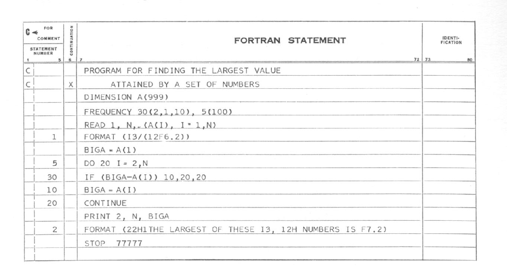
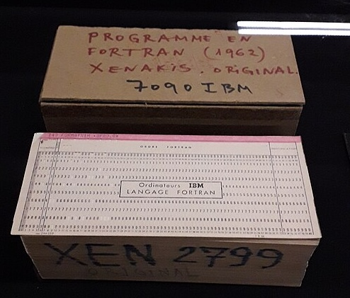

Stands for Formula Translation.
It was made by John Backus in 1956 and became the first general-use high-level language.
It introduced the feature of comments in a programming language using the symbol 'C'.
Many newer versions have been created since. It is still used to this day, specially for High Performance Computing.

A Fortran "Statement Sheet" or "Coding Form" for preparing code to be copied onto a punch card.

A deck of Fortran cards.
C this? 'Tis a comment.